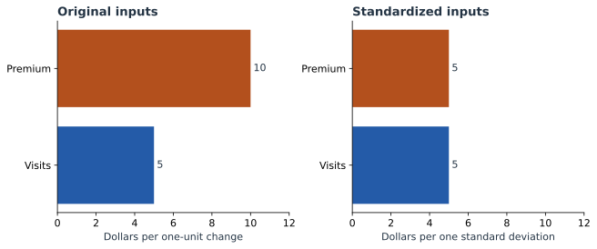

What Regression Coefficients Actually Mean
In Part 1, we fitted the rule “20 + 5 × visits + 10 × Premium.” It predicts 50 dollars for Maya, who made four visits and has Premium. Now we will unpack what those coefficients mean, how their units matter, and why their sizes alone do not tell us which input matters most.
Read a coefficient together with its input
| Term | Coefficient | Meaning |
|---|---|---|
| Visits | 5 | 5 dollars per additional visit, with plan fixed |
| Premium | 10 | 10 dollars for changing Basic to Premium, with visits fixed |
| Intercept | 20 | 20 dollars for zero visits and Basic |
For a Basic customer, two visits give 20 + 5 × 2 = 30. Three visits give 20 + 5 × 3 = 35. Subtracting the predictions gives 5. We did not need a new fit; we changed one input in the existing equation.
Likewise, at three visits, Basic gives 35 and Premium gives 45. The plan coefficient describes this difference. It does not say Premium customers always spend exactly 10 more in the observed data.
A category needs a comparison category
Basic has indicator 0; Premium has indicator 1. Basic is therefore the reference category. Its plan contribution is 0 because its starting level is already included in the intercept.
We could instead encode Basic as 1 and Premium as 0. Write $q=1-p$. Substitute $p=1-q$ into the original equation:
The intercept is now 30 and the category coefficient is −10. Maya is Premium, so $q=0$, giving 30 + 20 = 50. The predictions are identical. The changed sign reflects a changed comparison: Basic is now 10 below Premium.
For three categories, use two indicators with one reference category. For example, Basic, Plus, and Premium can use separate Plus and Premium indicators. Keeping an intercept and all three indicators would duplicate information because those three indicators always sum to one.
A smaller coefficient can describe the same rule
Suppose someone records visits in batches of ten. Maya’s four visits become 0.4 batches. The equivalent model is:
Maya: 20 + 50 × 0.4 + 10 = 50.
The coefficient increased from 5 to 50 because the unit became ten times larger. Nothing about the predictions or the underlying visit information changed. This is why a raw coefficient ranking can be misleading when features use different units.
Put changes on a comparable scale
Standardization subtracts the training mean and divides by the training standard deviation. Our visits are 1, 1, 3, 3: their mean is 2 and their population standard deviation is 1. Premium indicators are 0, 1, 0, 1: their mean is 0.5 and their population standard deviation is 0.5.
Replace $v$ by $2+z_v$ and $p$ by $0.5+0.5z_p$. The same equation becomes:
Now both coefficients are 5. Each describes a one-standard-deviation change in its input. For Maya, $z_v=2$ and $z_p=1$, so 35 + 5 × 2 + 5 × 1 = 50.


For the binary plan input, a whole switch from 0 to 1 spans two standard deviations. It therefore still changes the prediction by 10. Standardization does not turn a half-switch into a real plan a customer can buy.
from sklearn.preprocessing import StandardScaler
# Continue with X, y, and model from Part 1.
scaler = StandardScaler().fit(X)
scaled_model = LinearRegression().fit(scaler.transform(X), y)
print(scaled_model.intercept_) # 35
print(scaled_model.coef_) # [5, 5]
np.testing.assert_allclose(
scaled_model.predict(scaler.transform(X)),
model.predict(X)
)Fit the scaler on the training rows, then reuse those same means and scales for new customers. Recalculating them for Maya alone would change what the model inputs mean.
A fitted number can be uncertain
We estimated three parameters from just four observations. That leaves one residual degree of freedom: 4 − 3 = 1. It is enough to demonstrate the calculation, but gives very little information about how reliably we have estimated the coefficients.
| Coefficient | Estimate | Std. error | 95% interval |
|---|---|---|---|
| Visits | 5 | 2 | −20.41 to 30.41 |
| Premium | 10 | 4 | −40.82 to 60.82 |
A standard error measures estimated uncertainty in a fitted coefficient under the usual OLS error assumptions. It is not the size of the prediction’s contribution. A 95% interval also needs a multiplier: here the Student-t multiplier with one degree of freedom is about 12.706. For visits, 5 ± 12.706 × 2 gives the interval above.
The wide intervals are a useful lesson in sample size. We can reconstruct the fitted prediction exactly while still having considerable uncertainty about the relationship estimated from the population. A plot labeled “± one standard error” must not be read as a 95% interval.
Keep the equation in view
So far, adding a visit always adds 5. The next chapter changes that: we will give the model a squared-visits input and watch its prediction bend. We will then have to read related coefficients together.
Sources and worked examples
This chapter develops ideas from the lessons below in A Data Odyssey’s Explainable AI playlist. The customer data, calculations, figures, and interactive examples here are original teaching examples. The creator’s companion notebooks use different datasets.
- Interpretable Feature Engineering — Conor O’Sullivan, A Data Odyssey.
- 8 Plots for Explaining Linear Regression — Conor O’Sullivan, A Data Odyssey.
- scikit-learn: StandardScaler
- statsmodels: coefficient confidence intervals